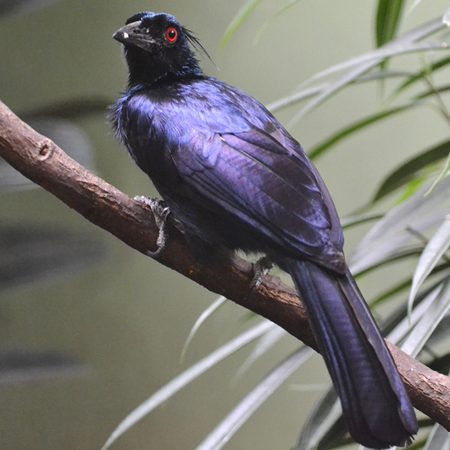

|  |
trumpet manucode (Phonygammus keraudrenii) นกชนิดนี้กระจายตัวอยู่ตามที่ลุ่มในป่าฝนทางตอนเหนือของ
เคป ยอร์ก เพนนินซูล่า ออสเตรเลีย นิวกินี และเกาะอารู และนกชนิดนี้จะจับคู่กับตัวเมียพียงตัวเดียวเท่านั้น
ลักษณะ : ลักษณะ มีลำตัวยาวประมาณ 31ซม. ขนบริเวณอกจะมีลักษณะคล้ายกับขนบนหัวออกมาคล้ายเขาเล็กๆขณลำคัวมีสีสะท้อนดำเหลือบน้ำเงิน เขียวและม่วง นัยน์ตาสีแดง หลอดลมมีลักษณะขดและยาว จะงอยปาก ขา มีสีดำ ตัวเมียจะมีขนาดเล็กกว่าเล็กน้อยและสีที่อ่อนกว่า |